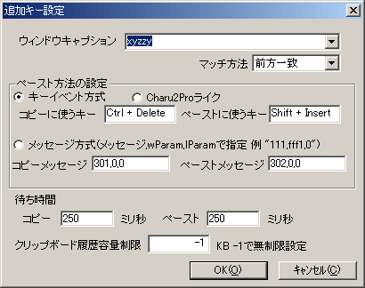

基本的な設定は、「とりあえず使いたい！」の「設定の仕方」で解説しました。あれでほぼCharu3を使うことは出来ますが、環境によっては他の細かい設定が必要になる場合もありますし、自分の手になじむように設定するとより便利に使えたりもします。この章では、そんな場合の為に設定項目を全て解説します。
現在快適にCharu3が使えている、もう別に便利な機能は必要ない、そんな場合は読まなくて大丈夫です。
ポップアップから選んだアイテムの中身を貼り付けと同時にクリップボードにも入れます。ポップアップを出して項目を選ぶたびに、クリップボードの中身も変わります。この機能を有効にしたほうが貼り付け精度が上がります。
クリップボードの中身をCharu3に上書きされるのが嫌な場合はチェックを外してください。ただし、その場合貼り付けに失敗する場合もありますから貼り付け待ち時間を長くしたりして対応してください。
 タスクトレイアイコンのツールチップを固定にする
タスクトレイアイコンのツールチップを固定にする
クリップボードの内容をタスクトレイのツールチップに表示する機能がありますが、WindowsXPでのタスクトレイアイコンを隠す機能と相性が悪いので固定にすることも出来ます。これをチェックするとツールチップは「Charu3」に固定されます。
 ペースト後に自分を最小化してメモリを解放する
ペースト後に自分を最小化してメモリを解放する
Charu3は標準で、ポップアップを閉じたときに自分自身を最小化します(一瞬タスクバーに出るのはそのため)。この動作で余分なメモリを解放してるわけで、解放しない場合は3MB程度使いますが、それが500KMと1/6になります（実際は3MBのメモリも解放されてるんですがOSが「今はいらないからとっとけ」って感じ）。だから、まぁ、どっちでもいいじゃんって感じなんですが、使わないメモリをいつも確保してる常駐ソフトが嫌な人はチェックを入れておいたほうが良いと思います。タスクバーに出るのがウザイひとは外すのが良いと思います。
 タスクトレイアイコンをクリックした時の動作
タスクトレイアイコンをクリックした時の動作
タスクトレイアイコンをクリックした時の動作を選択できます。初期設定ではポップアップを表示します。ストックモードを切り替えるように変更することが出来ます。
 ワード97,98の切り取りバグ、Notes問題に対応する
ワード97,98の切り取りバグ、Notes問題に対応する
クリップボード系のソフトと同時にWordを使い、Word上でCtrl+XをするとWordが落ちる問題を回避できるようになります。ただし、他のアプリケーションで問題が出る可能性があるので、Wordを使わない場合はチェックを外した方が良いと思います。
 自己診断タイマー
自己診断タイマー
Charu3は定期的にクリップボードチェインの上位にくるようにしたり、タスクトレイが破壊されてアイコンが消えてたりしないかを監視しています。クリップボードチェインを他のアプリケーションが切ってしまっても自動的に復旧しますので、クリップボード履歴の取りこぼしが発生しません。これを0に設定すると自己診断をやめます。一部のクリップボードを監視するソフトはこの機能を使うと誤作動を起こしますので、そんな時は0にして下さい。通常は10000ミリ秒(10秒)から60000ミリ秒(1分)程度で良いと思います。
ストックモード中の貼り付け動作を選択できます。先入れ先出しにすると、Ctrl+Vで貼り付けをするとき、履歴を古い順に探してクリップボードに入れてくれます。たとえば、"ABC"、"DEF"、"GHI"の順で、コピーしたとします。この時、Ctrl+Vで貼り付けをすると、3回の貼り付け(Ctrl+Vを3回押す)で、"GHI"、"DEF"、 "ABC"の順に貼り付けが実行されます。実際にやってみれば判るかと思いますので、試してみてください。
先入れ後だしにすると、最後に入れたコピーが最初のペーストで貼り付けられます。これはスタック（LIFO）と言います。
 ストックモード中はコピー時に効果音を鳴らす
ストックモード中はコピー時に効果音を鳴らす
ストックモード中(アイコンが青い時)にCtrl+Cなどでテキストをコピーすると、設定したWaveファイルが再生されます。再生するWaveファイルは、参照ボタンで任意に変えることが出来ます。
 ストックモードOFF時にワンタイム項目をクリアする
ストックモードOFF時にワンタイム項目をクリアする
ストックモードをOFFにした時、ワンタイム項目を自動でクリアします。使い切らなかったワンタイム項目がクリアされるので、次回履歴モードを使うときは、まっさらな、クリアな状態で使えます。
 ストックモードの最後にクリップボードを空にしない
ストックモードの最後にクリップボードを空にしない
ストックモードで先入れ先出し貼り付けをしている時、最後の項目を貼り付けた後にクリップボードを空にしません。
 貼り付け時にも音を鳴らす
貼り付け時にも音を鳴らす
チェックすると、ストックモードで貼り付ける時に設定した効果音が鳴ります。
 ワンタイム項目が無くなったらストックモードをOFFにする
ワンタイム項目が無くなったらストックモードをOFFにする
ストックモードなどで全ての履歴を貼り付けた場合や、他の手段でワンタイム項目を全て使い切ったor消した場合、自動的にストックモードが外れます。ストックモードの切り忘れで不便を感じている方はこの項目にチェックを入れてください。
 重複チェックをする
重複チェックをする
ストックモードで重複チェックをするようになります。これを外すと、続けて同じ内容のテキストをコピーできるようになります。ただし、キーリピートするとその個数分入るので注意してください。
ポップアップで選択した項目の位置を保持し、次回ポップアップ表示時にも引き継ぎます。いちいちカーソルが上に戻らないので快適です。
 ポップアップのフォルダ状態を保持する
ポップアップのフォルダ状態を保持する
ポップアップを閉じ、もう一度開いた時フォルダの開閉状態を保持するようになります。 チェックしないと選択したアイテム以外のフォルダが閉じられます。
 ポップアップした時にIMEを自動でOFFにする
ポップアップした時にIMEを自動でOFFにする
ポップアップウィンドウでIMEが入っているとクイックアクセスが使えません。だからIMEをOFFにしている必要があります。これはそれを自動で行います。っていっても普通ツリーでIMEをONにする機会ってあまり無いので、初期設定でチェックは外れています。
 マウスカーソルが画面の隅に触れたらポップアップする
マウスカーソルが画面の隅に触れたらポップアップする
マウスカーソルがデスクトップの隅に触れたらポップアップするようになります。また、4つのチェックボックスで有効な隅を設定できます。マウスで快適に使いたい方は是非。
 ポップアップキー設定
ポップアップキー設定
ポップアップを出すホットキーを設定します。デフォルトはAlt+Xです。ラジオボタンで選べば、Shiftキー、Ctrlキー、Altキーのダブルクリックも設定できます。好きなホットキーを設定してください。
 ストックモード切替キー設定
ストックモード切替キー設定
ストックモードを切り替えるキーを設定します。初期値はCtrl+無変換です。ラジオボタンで選べば、Shiftキー、Ctrlキー、Altキーのダブルクリックも設定できます。好きなホットキーを設定してください。
 ポップアップ位置
ポップアップ位置
ポップアップする位置を設定できます。キャレット位置、マウスカーソル位置、デスクトップの四隅、デスクトップの中央から選択できます。
 デスクトップ外にポップアップしたら補正する
デスクトップ外にポップアップしたら補正する
これをチェックしておくと、画面の端などでポップアップした場合、ツリーの内容が隠れないように位置を補正します。ただ、これだとマルチディスプレイの環境でセカンダリのディスプレイにポップアップが出なくなるようです。そんな場合はチェックを外してください、うまくいくかもしれません。
 クイックアクセス確定時に貼り付けを実行する
クイックアクセス確定時に貼り付けを実行する
ポップアップでアイテムの頭文字をタイプするとジャンプするのがクイックアクセス機能ですが、これにチェックを入れるとクイックアクセス確定時に自動で貼り付けを行うようになります。クイック確定が起こるまでの時間内に、カーソルキーやスペースキーなどで操作をするとクイック確定はキャンセルされます。また、対象がフォルダの場合はフォルダを開く動作をします。
 クイックアクセスで大文字小文字を区別しない
クイックアクセスで大文字小文字を区別しない
Charu3ではクイックアクセスの検索対象を大文字小文字で区別します。これをチェックすると、大文字と小文字を同一視して検索しますので、動作的にはCharu2Proと同様になります。
 シングルクリックでフォルダを開閉
シングルクリックでフォルダを開閉
普通はダブルクリックでフォルダを開閉しますが、これをチェックするとクリックしただけで開閉するようになります。あと、一番最後に開いたフォルダ以外は自動的に閉じるようになります。個人的には不便な気もしますが、こういう動作が良いって人もいるようなので実装しました。これはこれ以上いじれないので、機能追加はここまでです。
ポップアップの透明度を設定できます。半透明に出来るのはWindows2000以降のみで、Windows95、98、Me、NT4.0では出来ません。使いにくくない程度に透明にすると、なんか格好いいです。
 フォント名、サイズ
フォント名、サイズ
ポップアップの表示フォントを設定出来ます。Windowsにインストールされているフォントなら全て使用可能です。欧文フォントを選んだ場合は、半角文字だけ選択したフォントになります。サイズはポイント単位で設定可能です。
ポップアップのアイコンを変更できます。18x18区切りのアイコンファイル(0x00ff00が透明色)のビットマップを用意すれば、オリジナルのアイコンでCharu3が使えます。アイコンと色設定を合わせることでクールからポップまで、色々な外観を表現可能です。
 色設定
色設定
ポップアップの枠の色、背景色、テキストの色を設定できます。アイコンファイルを合わせて好みのデザインでCharu3を使ってください。
チェックを入れると、ポップアップで複数貼り付けをした後に、チェックボックスを消すためにツリーの再構築処理をします。また、アイコンファイルを切り替えたときもツリーの再構築が必要です。それを自動で行うのがこの機能です。オフにすると、一度チェックボックを付けた後は消えません。手動で消す場合は、タスクトレイメニューから「ツリーを再構築」を選んでください。
枠やアイコンは可愛くしたのにスクロールバーだけダサダサWindows標準の灰色スクロールバーなんてイヤですね。できればこれの色も変えたんですが、ちょっとそれは出来ないみたいなのでせめて消しておこうって事でスクロールバーの表示を設定できるようにしました。お勧めは縦スクロールバーのみ。縦も無くすとマウスで使うときにちょっと不便だし(縦も無しにした場合はホイール使ってください)。キーボードオンリーの場合は縦も横も消しちゃって構わないと思いますけどね。
ツリーでアイテムにマウスカーソルをかざすか、F1キーを押すとアイテムの内容がポップアップしますが、その内容を指定します。日付やタイトルはいらないって場合は設定してください。

固有ウィンドウ設定以外の、普通のアプリケーションに対する貼り付けとコピーのキー設定です。これは基本的に変えることは無いと思います。
選択テキストを取るときにコピーの動作を行います。その時に使うのがこのキー設定です。普通はCtrl+Cです。
 ペーストに使うキー
ペーストに使うキー
貼り付けの時に使うのがこのキー設定です。普通はCtrl+Vです。
 キーイベント方式orCharu2Proライクorメッセージ方式
キーイベント方式orCharu2Proライクorメッセージ方式
普通はキーイベント方式で使いますが、XPでSP1を当てるとキーイベント方式で上手く動かない場合があるらしいです。その時はメッセージ方式にしてください。ただし、メッセージ方式にすると一部アプリで貼り付けが正常に行われない場合があります。
また、Charu2Proでは貼り付けできたのに、Charu3ではダメという場合もあります。そんな時はCharu2Proライクを使ってみてください。
それぞれ、コピーと貼り付けの待ち時間です。各アプリの動作のタイミングの関係で、一定の待ち時間を置かないと上手く貼り付けられない場合があります。それは使っているソフトやマシンの性能に依存して、環境で違います。もし上手く貼り付けられない場合は長めに設定してみてください。問題が無ければ限りなく0に近づけても構いません。
 クリップボード履歴容量制限
クリップボード履歴容量制限
クリップボードの履歴を取る時の履歴のサイズを制限できます。遅いマシンで10MB程度のテキストをコピーすると、記録の処理にも時間が掛かりますし、設定ファイルも巨大になってしまいます。それで困る場合は制限を設けてください。640KB程度にすれば問題ないと思います。0にすると履歴を取らなくなります(ただしクリップボードチェインからは外れません)。-1にすると無制限になります。
 固有ウィンドウ設定
固有ウィンドウ設定
デフォルトのキー設定では対応しきれないソフトに対する設定です。例えばxyzzyはコピー&ペーストのキー設定がctrl+insertとshift+insertだったりします。こういうソフトは個別に登録する必要があります。ウィンドウタイトル(キャプション)から判断してキー設定を自動で変えます。リストから選んで変更ボタンを押すか、追加ボタンを押すとダイアログが出るのでそこで設定してください。

 ウィンドウキャプション
ウィンドウキャプション
設定したいソフトのキャプションをコンボボックスから選び、余計な部分を消します。キャプションには大抵、ソフト名と開いているファイル名などが表示されます。いつも同じ部分だけ残すようにします。IEの場合、Microsoft
Internet Explorerなどと指定します。
 マッチ方法
マッチ方法
キーとタイトルをマッチさせる方法です。前方一致、後方一致、インクルードフレーズがあります。
前方一致・・・キーワードが、設定タイトルの先頭から一致した場合
後方一致・・・キーワードが、設定タイトルの一番最後から一致した場合
インクルード・・・キーワードが、設定タイトルに含まれていた場合一致。
フレーズ・・・キーワードと設定タイトルが完全一致の場合のみ一致。
例) IEの場合
keijiweb ver 4.0 - Microsoft Internet Explorer
IEのタイトルは、サイトの名前、ソフト名と並びます。この場合、キーワードにMicrosoft Internet Explorerを指定し、後方一致かインクルードを使います。
Microsoftをキーワードにした場合は、インクルードでしか一致しません。Explorerをキーワードにした場合は、後方一致とインクルードで一致します。keijiwebを指定した場合は前方一致とインクルードで一致します。
インクルードの場合、想定外のソフトにも一致してしまう場合がありますので、普通は前方一致か後方一致を使います(大抵これで用が足りる)。フレーズの場合は絶対にタイトルの変わらないソフトに対して使います。
あとの設定はデフォルトキー設定と同じです。設定が出来たら追加ボタンや適用ボタンを押して設定を反映させてください。